Abstract
Generative models have demonstrated promising results in open-ended visual storytelling. However, most mainstream methods employ the autoregressive generative framework, which lacks a global comprehension of the story and is prone to error accumulations. Those issues become more pronounced as the length of the storytelling increases. We present Story-Adapter, a simple and efficient training-free adaptation of text-to-image diffusion models for open-ended ultra-long story generation. We propose Iterative Consistent Attention (ICA) scheme to refine the outputs in loops:
Based on the initial visual contents from the diffusion model, we iteratively apply the reference images attention in ICA to build a global comprehension of the story, refine the consistency with the references, and preserve the semantics from the text prompts.Specifically, in each step, we leverage all the outputs from the previous iteration as reference tokens to guide the attention matrices update in a training-free manner. Compared with the previous story visualization arts, Story-Adapter attains better multi-character consistency and visual quality both qualitatively and quantitatively, yet enjoys better efficiency during generation.
Story-Adapter Architecture
Story-Adapter pipeline. Firstly, Story-Adapter generates a series of image sequences based only on the textual descriptors in the story as Story-Adapter initialization to provide reference images for the first iteration of Story-Adapter looped stabilization diffusion framework. Then Reference Images Cross Attention provides Story-Adapter with a global comprehension of the story based on all the reference images, aggregating similar visual representations between the generated image and all the reference images to maintain consistency in the story visualization. Finally, in Story-Adapter's loop stabilization diffusion framework, Story-Adapter uses the result of the previous iteration as the reference images for the next iteration. Visualization results of Story-Adapter are gradually improved through iteration.
Qualitative Comparison of StorySalon Story
Qualitative comparison of story visualization shows AR-LDM and StoryGen generate coherent image sequences but degrade with story length due to autoregressive errors. StoryDiffusion and Story-Adapter perform well, though StoryDiffusion struggles with subject consistency and ID image flaws due to high computation demands. Story-Adapter better meets the requirements for effective story visualization.
Qualitative Comparison of Ultra-Long Story


StorySalon Story Result
 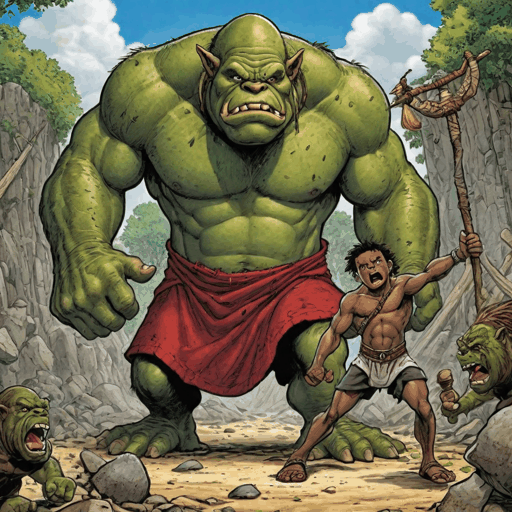
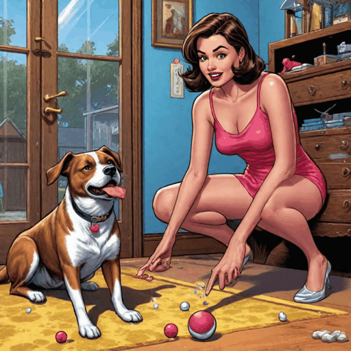
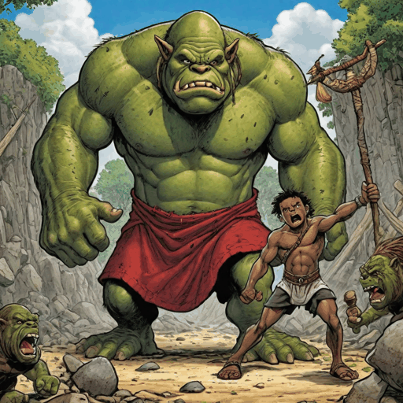
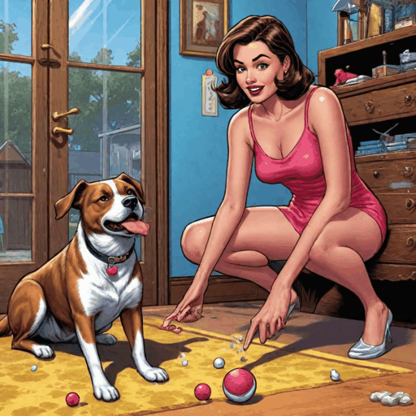
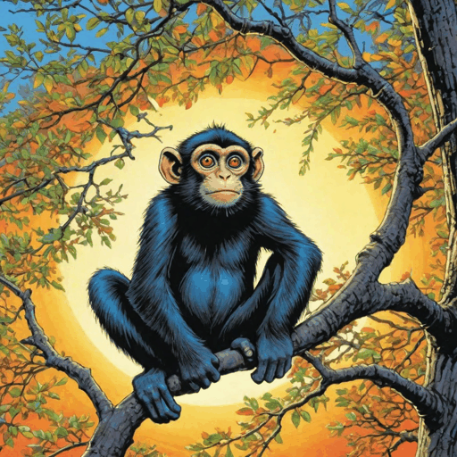
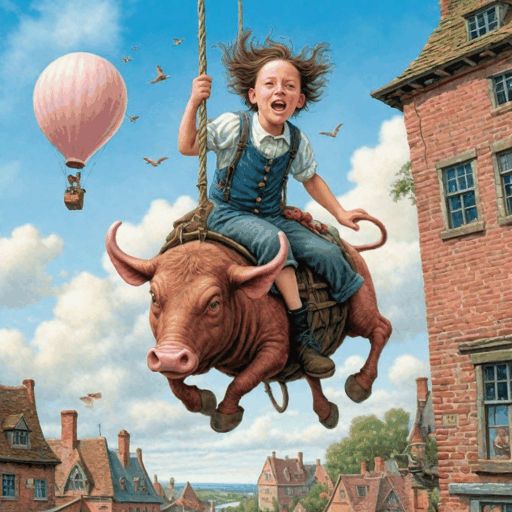
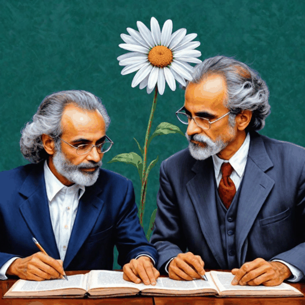
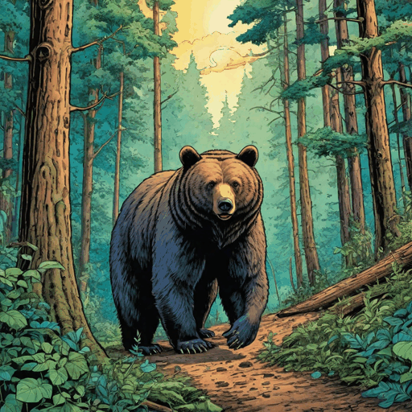
 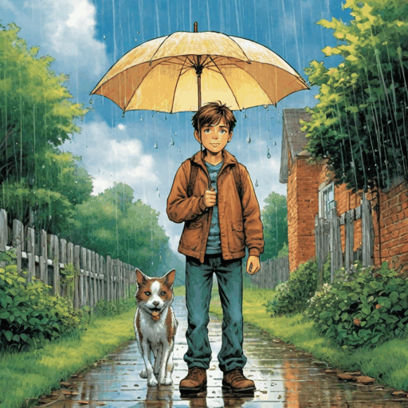
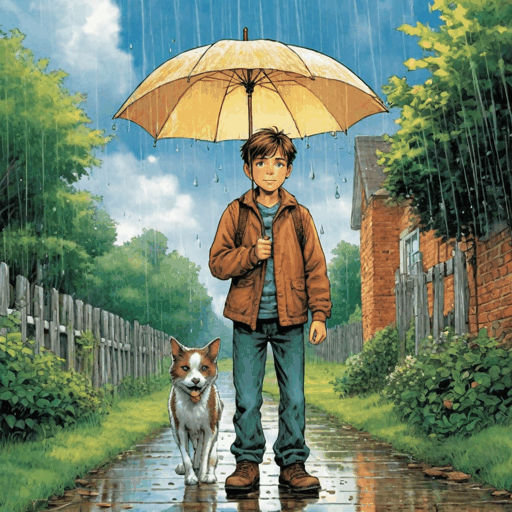
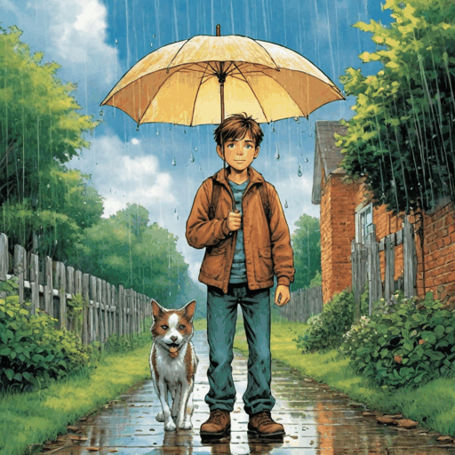
50 Ultra-Long Story Result


100 Ultra-Long Story Result